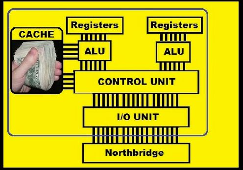
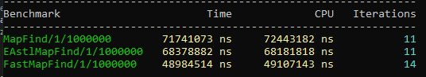
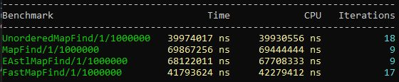
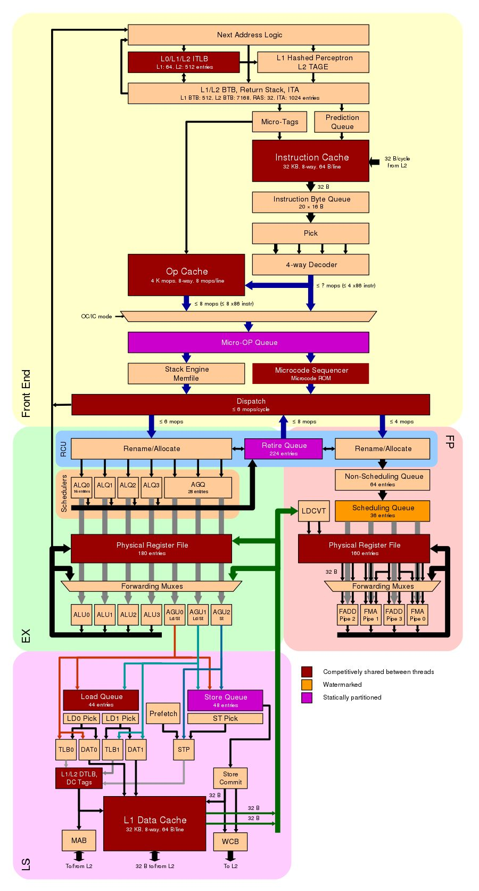
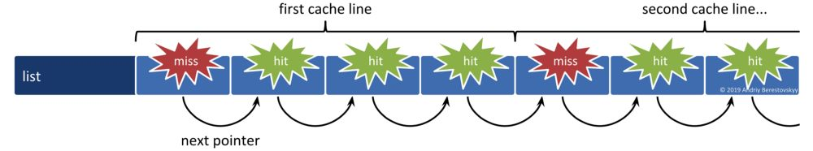
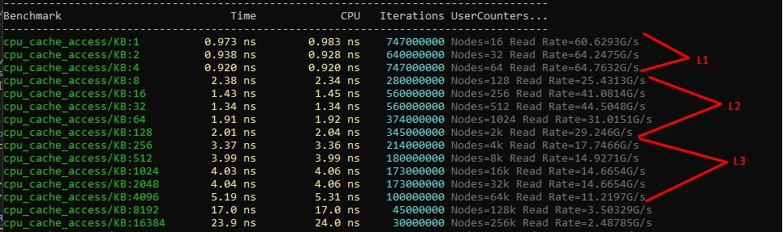
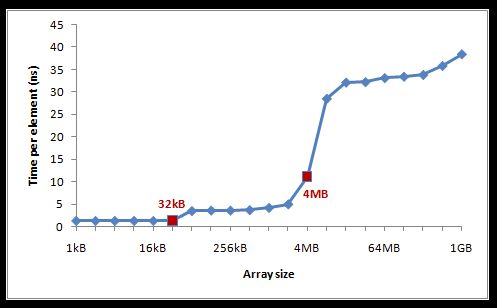
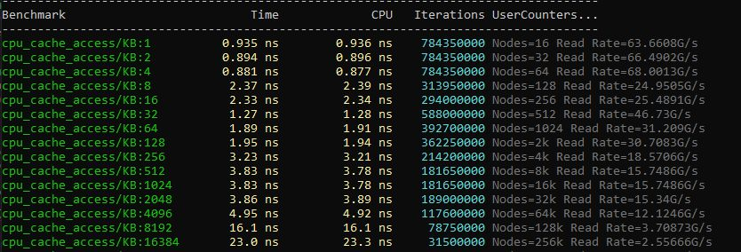
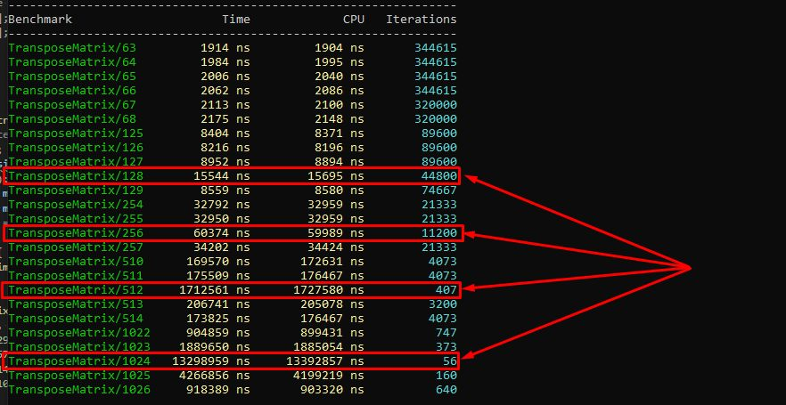

Всем ведь приходилось заниматься улучшением производительности? Для игр особенно актуально, ну может какая-то три-в-ряд не страдает этим. Как обычно серебряной пули нет, начинаем со структур данных, алгоритмов, спускаемся ниже, а если не помогает, придумываем SoA, AoS шаблоны. Если проблема не решается, подтягиваем профайлеры и предметно разбираем узкие места, но чтобы мы не делали, таким узким местом всегда будет "железо". Можно сколько угодно оптимизировать алгоритм работы, но CPU c его гигагерцами будет простаивать 90% времени если его неправильно "кормить" данными. Одной (только одной из проблем) проблемой организации эффективной работы с данными будет меньше, если знать и уметь работать с кэшами разных уровней.
Тут на вики описано (Cache pollution) как "на пальцах" быстренько убить перф на обходе массива, общего решения для такого примера нет, но приведено решение для конкретного случая (This can be achieved by using special cache control instructions, operating system support or hardware support). Можно и дальше увеличивать размер кэша, что собственно и делают (где то здесь на хабре была новость, что Интел при переходе на L1 кэш размером 32кб, заново спроектировал блок доступа к нему, сорян не нашел ссылку), но это дорого, неэффективно на масштабах современных процов, и всегда найдутся данные которые этот кэш отравят, опять. Интересно как починить? го под кат...

КДПВ (Найдена гдето на просторах интернетов)Все тесты приведены на такой конфигурации - AMD Ryzen 9 3900X 12-Core 3.80 GHz
параметры кэшей
Показать код
Cache size
L1 Data 32 KiB (x12)
L1 Instruction 32 KiB (x12)
L2 Unified 512 KiB (x12)
L3 Unified 16384 KiB (x4)
Cache associativity
Level 1 cache size - 12 x 32 KB 8-way set associative caches
Level 2 cache size - 12 x 512 KB 8-way set associative unified caches
Level 3 cache size - 4 x 16 MB 16-way set associative shared caches
Cache latency
4 (L1 cache)
12 (L2 cache)
40 (L3 cache)Вообще контроллеры памяти (кто-то читал спецификации и ерраты на контроллер памяти для последних интелов?) и особенно организация кэшей в процессоре, вещь очень специфичная даже в рамках одной серии процессоров, не говоря уже о семействах и отдельных красных производителях, поэтому лучшим подтверждением результатов будет просто взять исходники и поиграться на своем железе, так вернее.
Это небольшое исследование появилось в результате анализа архитектуры и опыта работы с контейнерами и алгоритмами в нескольких игровых движках (EA Unity, Dagor Engine, 4A Engine). В тестах используются c++14 std и EASTL (EA Standard Template Library), стандартная для проверки корректности тестов, EASTL - потому что де факто стандарт для разработчиков игр, если конечно за время существование движка не написана своя stl с преферансом и дамами. Конечно же, все примеры взяты из головы, и ничего подобного в проде нет, я надеюсь... :)
Для начала напишем простой тест с размещением данных, который будет непосредственно мучать кэш при линейном доступе? Например как-то так, возьмем для тестов стандартную map, eastl::map, и самописную map, сделанную на основе сортированного массива:
map/eastl::map/fastmap find (1 млн пар)
Показать код
constexpr u32 test_size = 1000000;
struct map_holder {
std::map<int, int> test_map_std;
eastl::map<int, int> test_map_eastl;
fastmap<int, int> test_fastmap;
map_holder() {
for (int j=0; j < test_size; j++) {
test_map_std.insert({j, j+1});
test_map_eastl.insert({j, j+1});
test_fastmap.insert({j, j+1});
}
}
};
static map_holder holder;
static void EAstlMapFind(benchmark::State& state) {
for (auto _ : state) {
for (int j = 0; j < state.range(1); ++j) {
auto v = holder.test_map_eastl.find(j);
benchmark::DoNotOptimize(v);
}
}
}
BENCHMARK(EAstlMapFind)->Args({1, test_size});
static void MapFind(benchmark::State& state) {
for (auto _ : state) {
for (int j = 0; j < state.range(1); ++j) {
auto v = holder.test_map_std.find(j);
benchmark::DoNotOptimize(v);
}
}
}
BENCHMARK(MapFind)->Args({1, test_size});
static void FastMapFind(benchmark::State& state) {
for (auto _ : state) {
for (int j = 0; j < state.range(1); ++j) {
auto v = holder.test_fastmap.find(j);
benchmark::DoNotOptimize(v);
}
}
}
BENCHMARK(FastMapFind)->Args({1, test_size});Получаем следующий результат:

Тест простой и не показательный, потому что есть ряд ошибок, fastmap сделан через сортированный вектор, std/eastl::map обычно сделаны через red–black tree. Немного перепишем тест, чтобы сравнивать мягкое с мягким и получаем более сопоставимые результаты.
map/unordered_map/eastl::map/fastmap find (1 млн пар)
Показать код
constexpr u32 test_size = 1000000;
struct map_holder {
std::unordered_map<int, int> test_map_unordered;
std::map<int, int> test_map_std;
eastl::map<int, int> test_map_eastl;
fastmap<int, int> test_fastmap;
map_holder() {
for (int j=0; j < test_size; j++) {
test_map_unordered.insert({j, j+1});
test_map_std.insert({j, j+1});
test_map_eastl.insert({j, j+1});
test_fastmap.insert({j, j+1});
}
}
};
static map_holder holder;
static void UnorderedMapFind(benchmark::State& state) {
for (auto _ : state) {
for (int j = 0; j < state.range(1); ++j) {
auto v = holder.test_map_unordered.find(j);
benchmark::DoNotOptimize(v);
}
}
}
BENCHMARK(UnorderedMapFind)->Args({1, test_size});
static void EAstlMapFind(benchmark::State& state) {
for (auto _ : state) {
for (int j = 0; j < state.range(1); ++j) {
auto v = holder.test_map_eastl.find(j);
benchmark::DoNotOptimize(v);
}
}
}
BENCHMARK(EAstlMapFind)->Args({1, test_size});
static void MapFind(benchmark::State& state) {
// Code inside this loop is measured repeatedly
for (auto _ : state) {
for (int j = 0; j < state.range(1); ++j) {
auto v = holder.test_map_std.find(j);
benchmark::DoNotOptimize(v);
}
}
}
BENCHMARK(MapFind)->Args({1, test_size});
static void FastMapFind(benchmark::State& state) {
for (auto _ : state) {
for (int j = 0; j < state.range(1); ++j) {
auto v = holder.test_fastmap.find(j);
benchmark::DoNotOptimize(v);
}
}
}
BENCHMARK(FastMapFind)->Args({1, test_size});
Уже лучше, показательное время на конкретном железе, но сам тест не совсем правильный, потому что чтение данных происходит последовательно, т.е. мы сами обучаем BPU процессора, что дальше будут похожие выборки, и расстояние которым отличаются сами выборки небольшое. Чтобы получить более достоверные результаты, надо проверить разные паттерны доступа к памяти, это важно, потому что, чем ближе расстояние выборки к размеру кэша, тем сильнее будут проявляться последствия промахов (cache misses). Массовое и постоянное проявление промахов кэша, как раз и носит название "отравление кэша" данными - cache pollution.
Немного теории: время доступа к основной оперативной памяти очень большое, поэтому отдельные участки её дублируются в кэш, что существенно повышает быстродействие. Такое решение накладывает необходимость синхронизации между кэшами разного уровня и основной памятью, а также проблеме когерентности данных между кэшами ядер в многоядерных и многопроцессорных системах.

Теперь с этим знанием перепишем тест, так чтобы учитывался размер объекта при доступе. Смысл данного действия - допустим игровые сущности лежат в массиве друг за другом, мы знаем что если положить побольше данных рядом, то cpu будет проще с ними работать, они подгрузятся в кэш, не придется лазить в оперативку часто. Все так, это сделано во-первых для удобства работы с ними, во-вторых для ускорения основных операций, делаем сущности все больше и больше, и в какой то момент возникают странные проседания по перфу, от которых мы хотели уйти размещая данные поближе в одной области. Однако при достижении определенных размеров объектов мы получаем резкую деградацию перфа на обходе массива. Это происходит потому, что пока данные, к которым обращается код находятся в кэше все работает быстро, промах кэша приводит к выгрузке текущей линии этого уровня кэша и поиску и загрузке в кэше верхнего уровня, вплоть до оперативной памяти или вообще файла подкачки. На современных Intel/AMD время промаха кэша L3 может составлять более 30 циклов + время обращения к оперативной памяти, а это это уже десятки микросекунд простоя. Такие промахи обходятся приложению очень дорого. Проблема в том, что при увеличении размера объекта, также увеличивается вероятность промаха в кэше, потому что все меньше объектов помещаются в этот самый кэш.

работа с объектами больше или близко к page size в массиве (cache poisoning)
Показать код
u32 constexpr operator"" _B(unsigned long long int n) { return n; }
u32 constexpr operator"" _KB(unsigned long long int n) { return n * 1024; }
u32 constexpr operator"" _MB(unsigned long long int n) { return n * 1000 * 1000; }
const u32 cache_line_size = 64_B;
const u32 page_size = 4_KB;
struct TestNode {
TestNode *next = nullptr;
char members[page_size];
};
static TestNode *find_last_node(TestNode *head, u32 num_ops) {
while (num_ops--) head = head->next;
return head;
}
static void cpu_cache_access(benchmark::State &state) {
const auto mem_block_size = operator""_KB(state.range(0));
const auto num_nodes = mem_block_size / cache_line_size;
std::vector<TestNode> nodes(num_nodes);
for (size_t i = 0; i < nodes.size() - 1; i++) nodes[i].next = &nodes[i + 1];
nodes[nodes.size() - 1].next = &nodes[0];
const u32 num_ops = 1_MB;
while (state.KeepRunningBatch(num_ops)) {
auto last_node = find_last_node(&nodes[0], num_ops);
benchmark::DoNotOptimize(last_node);
}
state.counters["Nodes"] = benchmark::Counter(num_nodes, benchmark::Counter::kDefaults, benchmark::Counter::OneK::kIs1024);
state.counters["Read Rate"] = benchmark::Counter( state.iterations() * cache_line_size, benchmark::Counter::kIsRate, benchmark::Counter::OneK::kIs1024);
}
BENCHMARK(cpu_cache_access)
->ArgName("KB")
->RangeMultiplier(2)
->Range(1, 2048)
->Range(4096, 16384)
// L1 Cache
->DenseRange(1, 8, 1)
// L2 Cache
->DenseRange(48, 160, 16)
// L3 Cache
->DenseRange(512, 4096, 512);
Выход за рамки L3 кэша приводит совсем уже к плачевным результатам с временем доступа больше 20ns к отдельному элементу. Немного поиграв с параметрами бенчмарка, можно собрать статистику и нарисовать красивый график зависимости времени доступа от размера элемента в массиве, все результаты конечно показательные для конкретного железа.

Картинка старая (еще 2015 года), но результаты похожи на текущие и показательныПрактическим примером будет например обход массива объектов размером 65Кб каждый, допустим мы нашли некоторое решение, которое позволяет работать быстрее с таким массивом и реализовали его в тестах. В тестах все хорошо, красиво, написали бенчмарки показали лиду, переписываем продакшн код... И в худшем случае не видим прироста, в лучшем - прирост получается какой то совсем небольшой, который вообще не стоил затраченных усилий. Хотя даже пара фпс прироста в игре, или стабильный фпс тоже большая победа.
Почему так получилось? Разбираемся дальше, почему в бенчмарке прирост хороший, а в реальном приложении хорошо если пара процентов. Если запускать тесты в стерильных условиях, выключить браузер, почту, студию, то результаты повторяются от запуска к запуску с минимальными изменениями, но... никто не живет в стерильном мире, закрывать браузер и студию перед каждым запуском? Меня не хватило надолго на такой манки воркс и я ушел пить кофе и думать.
Не буду долго ходить вокруг конкретной причины, в моем случае Chrome + Visual Studio + Slack сильно влияли на результаты тестов, причем хуже всего было при включенном слаке. Что делает с кэшем слак я не знаю, но при его выключении результаты становятся лучше. Свои 5% влияния на тесты это приложение вносило, хром и студия тоже добавляли, но не так сильно, 1- 2% что можно отнести уже к погрешности измерений. Сторонние приложения по разному влияют на перформанс, это малозаметно если тесты и фреймворк влезают в L1 и L2, но когда затрагиваем уровень L3, тесту приходится делить его с другими процессами (если что, у вас может быть по-другому). Так и в большом приложении, нашим структурам приходится конкурировать с соседними подсистемами за кэш не только L3 но также и L2, а т.к. работает все одновременно, наши кэши может отравлять например поток загрузки текстур или стриминг моделей, поиск таких зависимостей может затянуться надолго и обычно сдвигается ближе к релизу игры.

Тесты с выгруженным Slack
Подбираемся к границам кэшей (ассоциативность)
Есть простая задача транспонирования матрицы, или какая то другая простая задача, требующая перебора элементов некоторого массива. Снижение производительности получаем, если две или более кэш-линий соревнуются за доступ к некоторой области памяти (напомню, кэш это просто отображение оперативки) такая ситуация редка, но ровные числа близкие к размеру страниц кэша приводят к тому, что в нем может находиться два значения, указывающие на одни и теже данные. Это обрабатывается так, что новая загруженная линия выбивает из кэша уже присутствующую в ней, что и приводит к росту накладных расходов на операции с такими структурами.
Пример конечно синтетический, больше сделан чтобы показать ограничения архитектуры, но если размер объекта подбирается к такому, что начинаются проявляться эффекты ассоциативности кэша (а мы обычно складываем объекты в массивы для удобства работы, так?), то он будет все заметнее влиять на работу приложения. Расстояние между линиями ассоциативности (cache associative way) кэша называют Critical Stride - это размер кэша, поделенный на его ассоциативность. В моем случае critical stride = 32кб \ 8 way = 4кб, когда мы начинаем перебор массива и обращаемся к его элементам, отличающимся на эту величину резко возрастает количество cache misses моментально убивая перф.
транспонирование матрицы (critical stride)
Показать код
int transpose(int *mat, int size)
{
for ( int i = 0 ; i < size ; i++ )
for ( int j = 0 ; j < size ; j++ )
{
int ij = i * size + j;
int ji = j * size + i;
int aux = mat[ij];
mat[ij] = mat[ji];
mat[ji] = aux;
}
return 0;
}
static void TransposeMatrix(benchmark::State& state) {
const int msize = state.range(0);
std::vector<int> matv;
matv.resize(msize * msize);
int *mat = matv.data();
for ( int i = 0 ; i < msize ; i++ )
for ( int j = 0 ; j < msize ; j++ )
mat[i * msize + j] = i+j;
for (auto _ : state) {
benchmark::DoNotOptimize(transpose((int*)mat, msize));
}
}
BENCHMARK(TransposeMatrix)
->DenseRange(63, 68, 1)
->DenseRange(125, 129, 1)
->DenseRange(254, 257, 1)
->DenseRange(510, 514, 1)
->DenseRange(1022, 1026, 1);
Пример неудобных для обработки в кэше матриц
Когерентность данных в кэшах (Согласованность)
Если с какими-то данными работает более одного ядра (в разных потоках), то надо синхронизировать эти значения между кэшами. Зависит от используемой архитектуры, но обычно L1 кэш у каждого ядра свой, ядра как то делят кэш L2 (один на два ядра, или один на 4) и общий для всех ядер кэш L3. Тогда мы можем предположить, что будет будет явная зависимость от того сколько одновременно ядер работает с уникальной копией переменной в данный момент. Но кэш не работает с отдельными байтами, а сразу со строкой, т.е. модифицируя один байт мы знаем что будут перегружены все кэш-линии во всех ядрах, которые имели несчастье её запросить. Начнем с простого примера, убедимся что потоки не аффектят друг друга на доступе к переменной
локальная переменная для потока (iterations = 500M)
Показать код
struct NonAtomicVariable {
void RunThread() {
volatile int64_t counter = 0;
for (auto i = 0; i < iterations; ++i) {
++counter;
}
}
};
NonAtomicVariable: numThreads = 1 ... 224 ms
NonAtomicVariable: numThreads = 2 ... 236 ms
NonAtomicVariable: numThreads = 3 ... 245 ms
NonAtomicVariable: numThreads = 4 ... 201 ms
NonAtomicVariable: numThreads = 5 ... 185 ms
NonAtomicVariable: numThreads = 6 ... 198 ms
NonAtomicVariable: numThreads = 7 ... 175 ms
NonAtomicVariable: numThreads = 8 ... 204 ms
NonAtomicVariable: numThreads = 9 ... 227 ms
NonAtomicVariable: numThreads = 10 ... 201 msПолучили какое время (200мс), запомнили его, все потоки отработали примерно одинаково. Усложним пример, попросим компилятор обращать внимание, что данные в памяти общие и их могут поменять в любой момент.
общая переменная между потоками (iterations = 500M)
Показать код
volatile int64_t _counter;
struct NonAtomicShared {
public:
void RunThread() {
for (auto i = 0; i < iterations; ++i) {
++_counter;
}
}
};
NonAtomicShared: numThreads = 1 ... 235 ms
NonAtomicShared: numThreads = 2 ... 2381 ms
NonAtomicShared: numThreads = 3 ... 3548 ms
NonAtomicShared: numThreads = 4 ... 4957 ms
NonAtomicShared: numThreads = 5 ... 6332 ms
NonAtomicShared: numThreads = 6 ... 7522 ms
NonAtomicShared: numThreads = 7 ... 8806 ms
NonAtomicShared: numThreads = 8 ... 10183 ms
NonAtomicShared: numThreads = 9 ... 11500 ms
NonAtomicShared: numThreads = 10 ... 12787 msПочему такое критично падение перфа - любое изменение переменной в любом из потоков будет сбрасывать всю кэш линию во всех остальных ядрах и забирать её актуальное состояние из памяти. Больше потоков, больше изменений, больше накладных расходов. В итоге на 10 потоках, они просто "стоят" все время обновляя кэш, и как-то эту переменную меняя, все это делает механизм кэширования неработоспособным. Хорошо, что у нас есть атомарные переменные, архитектуры процессоров имеют инструкции, позволяющие заблокировать доступ к определенному участку памяти при какой-либо операции, выполняется это аппаратно через системную шину, которую процессор использует для обращения к оперативке. Это достаточно дорогая операция, но реализация атомарных переменных положительно сказывается на работе с кэшем, сводя количество промахов к 1-2%. Уже простая (relaxed) модель атомарной переменной работает лучше. Время выполнения каждого потока выросло на порядок, но общее время работа с переменной выровнялось.
атомарная переменная (лок на участок памяти)
Показать код
std::atomic_int64_t _counter;
struct AtomicVariable {
void RunThread() noexcept override {
for (auto i = 0; i < Iterations; ++i) {
_counter.fetch_add(1, Order);
}
}
};
AtomicVariable(relaxed): numThreads = 1 ... 2002 ms
AtomicVariable(relaxed): numThreads = 2 ... 2018 ms
AtomicVariable(relaxed): numThreads = 3 ... 2028 ms
AtomicVariable(relaxed): numThreads = 4 ... 2029 ms
AtomicVariable(relaxed): numThreads = 5 ... 2048 ms
AtomicVariable(relaxed): numThreads = 6 ... 2054 ms
AtomicVariable(relaxed): numThreads = 7 ... 2075 ms
AtomicVariable(relaxed): numThreads = 8 ... 2077 ms
AtomicVariable(relaxed): numThreads = 9 ... 2099 ms
AtomicVariable(relaxed): numThreads = 10 ... 2108 msПримером практического применения можно назвать спинлок для работы с ресурсами, возьмем Test-And-Set реализацию, она простая и достаточно быстрая, но в этой простоте кроется подвох - на большом числе потоков и интенсивном взаимодействии с кэшем получаем замедление.
Test-And-Set spinlock (simple)
Показать код
namespace this_thread {
int cmpxchg(volatile int& v, int exc, int cmp) { return _InterlockedCompareExchange((unsigned long*)&v, exc, cmp); }
int load(volatile int* v) { return *v; }
}
struct tas_spin_lock {
enum { SPINLOCK_FREE = 0, SPINLOCK_FREE = -1 };
volatile int _lock;
void lock () {
while (this_thread::cmpxchg(_lock, SPINLOCK_FREE, SPINLOCK_FREE))
_mm_pause();
}
void unlock () {
_lock = SPINLOCK_FREE;
}
tas_spin_lock() : _lock(SPINLOCK_FREE) {}
};Вероятность того, что ресурс (в нашем случае спинлок) будет освобожден на следующем обращении будет 1 / (core * ht) = 1 / (12 * 2) = 1 / 24 (для моего cpu).
На самом деле намного ниже, потому что я взял идеальные условия работы приложения. Можно увеличить этот параметр на порядок или два, если учитывать:
расходы на перемещение контекста;
простои других потоков;
другие факторов.
Т.е. на условные 240-2400 циклов, процессор просто делает пустой опрос кэша, каждый раз задействую лок на этом участке памяти. Теперь перепишем спинлок так, чтобы после проверки переменной он какое то время её не трогал, давая остальным консюмерам завершить работу с ресурсом. Этим мы снизили общую интенсивность работы с кэшем, увеличив время реальной работы с ресурсом. Замедляя немного каждый поток, мы снижаем общее время выполнения работы, звучит немного странно, но работает.
Test-Test-And-Swap spinlock (backoff wait)
Показать код
struct ttas_spin_lock {
enum { SPINLOCK_FREE = 0, SPINLOCK_TAKEN = -1 };
volatile int _lock;
void lock () {
for (;;) {
// Optimistically assume the lock is free on the first try
if (!this_thread::cmpxchg(_lock, SPINLOCK_TAKEN, SPINLOCK_FREE)) {
break;
}
// Wait for lock to be released without generating cache annoying
uint8_t wait = 1;
while (SPINLOCK_FREE != this_thread::load(&_lock)) {
wait *= 2; // exponential backoff if can't get lock
for (uint8_t i = 0; i < wait; i++)
_mm_pause();
}
}
}
void unlock () {
_lock = SPINLOCK_FREE;
}
spin_lock() : _lock(SPINLOCK_FREE) {}
};Общее время выполнения каждого потока упало с 2 секунд, до 0.3 секунд. Тест тот же, что и общей атомарной переменной, но изменен подход работы с ней - добавлено "случайное" ожидание после обновления переменной.
Показать код
SpinLock(TAS impl):
numThreads = 1 ... 1.802 s
numThreads = 2 ... 1.908 s
numThreads = 3 ... 1.738 s
numThreads = 4 ... 1.829 s
numThreads = 5 ... 1.949 s
numThreads = 6 ... 2.154 s
numThreads = 7 ... 1.785 s
numThreads = 8 ... 1.767 s
numThreads = 9 ... 1.990 s
numThreads = 10 ... 2.208 s
SpinLock(T-TAS impl):
numThreads = 1 ... 0.1690 s
numThreads = 2 ... 0.2000 s
numThreads = 3 ... 0.5880 s
numThreads = 4 ... 0.3110 s
numThreads = 5 ... 0.1680 s
numThreads = 6 ... 0.1570 s
numThreads = 7 ... 0.2960 s
numThreads = 8 ... 0.5710 s
numThreads = 9 ... 0.1870 s
numThreads = 10 ... 0.1610 sИ напоследок про выравнивание данных (Alignment)
Тест производительности, который вы можете очень легко сделать самостоятельно - нужно добавить опцию упаковки данных без выравнивания и перемещать тестируемые данные по достаточно широкому диапазону адресов, чтобы они касались краев строк кэша.
unaligned access и результаты (потери более 10%)
Показать код
#pragma pack(1)
struct my_packed_struct_s {
uint8_t byte1;
uint32_t val1;
uint8_t byte2;
uint32_t val2;
};
#pragma pack()
static void Test00(benchmark::State& state) {
int steps = 16 * 1024;
int offset = state.range(0);
char *x1 = new char[16 * 1024 * 1024];
my_packed_struct_s *non_packed_s = new my_packed_struct_s[16 * 1024 * 1024];
for (auto _ : state) {
for (int i = 0; i < steps; i++) {
non_packed_s[i].byte2 = x1[i];
benchmark::DoNotOptimize(non_packed_s);
}
}
}
BENCHMARK(Test00)->DenseRange(0, 64, 8);
struct auto_packed_struct_s {
uint8_t byte1;
uint32_t val1;
uint8_t byte2;
uint32_t val2;
};
static void Test01(benchmark::State& state) {
int steps = 16 * 1024;
int offset = state.range(0);
char *x2 = new char[16 * 1024 * 1024];
auto_packed_struct_s *auto_packed_s = new auto_packed_struct_s[16 * 1024 * 1024];
for (auto _ : state) {
for (int i = 0; i < steps; i++)
{
auto_packed_s[i].byte2 = x2[i];
benchmark::DoNotOptimize(auto_packed_s);
}
}
}
BENCHMARK(Test01)->DenseRange(0, 64, 8);Показать код
// данные не выровнены, меньше -> лучше
Test00/0 23685 ns 23542 ns 29867
Test00/8 22759 ns 22496 ns 29867
Test00/16 22717 ns 22496 ns 29867
Test00/24 22770 ns 22949 ns 32000
Test00/32 22649 ns 22461 ns 32000
Test00/40 22809 ns 22496 ns 29867
Test00/48 22728 ns 22496 ns 29867
Test00/56 22676 ns 22949 ns 32000
Test00/64 22785 ns 22949 ns 32000
// данные выровнены
Test01/0 19068 ns 19252 ns 37333
Test01/8 19050 ns 18834 ns 37333
Test01/16 18946 ns 18834 ns 37333
Test01/24 19147 ns 19252 ns 37333
Test01/32 19195 ns 19252 ns 37333
Test01/40 19037 ns 19252 ns 37333
Test01/48 18941 ns 19252 ns 37333
Test01/56 19011 ns 19252 ns 37333
Test01/64 19001 ns 18589 ns 36462Практически все современные архитектуры страдают от невыровненного доступ (например, выполнение чтения по условному адресу 0x1001) и это сильно снижает производительность. Если посмотреть на реализации memcpy в gcc (например копируем структуру в 256 + 3 байта), то обычно алгоритм такой: копируется префикс до ровного адреса (один байт), остается 258, затем копируется 256 байтов эффективно на доступную ширину регистра, а последние 2 байта могут копироваться как два отдельных байта или как short, получается и долго и дорого, по сравнению с копированием 256 + 8 байтов, даже если там лежит мусор.
Может получиться и так, что даже при чтении двух байт по адресу 0x1001 (по сравнению с ровными 0x0FFC, 0x0FFC) с промахами кэша приведет к чтению двух строк, где 0x1001 — это одна строка кэша, где данные попали в конец, а следующий байт попал на следующую строку. Т.е. эффективно из 128 байт кэша мы используем только 2. Переходя к следующей структуре, содержащей такие поля, мы опять загружаем две строки используем 2 байта и т.д. То, как выровнены данные в целом, а также частота доступа к этим данным и сильно влияет на общую скорость работы алгоритмов. И компилятор здесь никак не поможет, разве что может указать, что данные не выровнены. Поэтому в большинстве игровых движков используются собственные аллокаторы памяти, которые просто не отдают кусочки памяти менее 64 байт.
Вместо выводов:
Я не написал про автоматическое, аппаратное и ручное управление cache prefetching специально, эта тема намного более обширная и со своими землями драконов. В рамках одной статьи вряд ли получится нормально, доступно и с примерами все описать.
Все, что добавили для повышения производительности, более широкие шины данных, конвейеры, кэши, прогнозирование ветвлений, несколько исполнительных ядер и ht. Это все очень помогает, но у всего есть слабые места, которые можно использовать как намеренно, так и случайно. Компиляторы или библиотеки мало что могут с этим поделать, если вас интересует производительность, то одним из важнейших факторов является попадание в кэш, выравнивание кода и данных на "удобные процессору", а не просто выравнивание по 32, 64, 128, 256. Компиляторы могут помочь упорядочить инструкции для суперскалярной архитектуры, или переупорядочить инструкции, которые относительно друг друга не имеют значения, могут дать большой прирост производительности при автовекторизации алгоритма.
И бОльшим упущением будет мысль, что узким местом является процессор, а не написанный алгоритм. От того, как мы кормим процессор данными зависит скорость выполнения всего, можно иметь хороший алгоритм, который будет спотыкаться о кэш или выравнивание, и иметь такую же эффективность как bubble-sort. Немного поработав даже на уровне исходного кода, переупорядочивая данные в структуре, упорядочивая объявления переменных/структур, упорядочивая функции в исходном коде и написав немного дополнительного кода для выравнивания данных, можно повысить производительность в несколько раз.
Книгу "алгоритмы и структуры данных" в современном издании надо переименовывать в "структуры данных и алгоритмы" - в порядке приоритета/важности (с) Книга Никлауса Вирта тут: ссылка на книгу.
Благодарю, что дочитали, всем безбажшенных решений.
З.Ы. После написания статьи, я поискал похожие на хабре: раз и два, примеры на шарпе. В общем, проблемы никуда не делись, все теже, все тамже...
← Все статьи